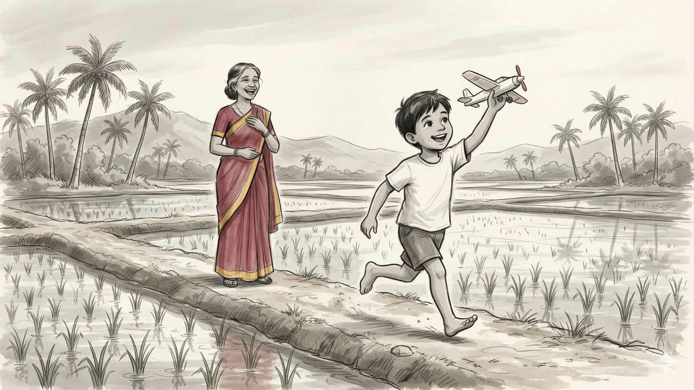

As a boy, Arun flew a toy plane over Tenkasi's paddy fields while Paati laughed. Years later he is a success in the city, three hours from home, missing every festival, every birthday, and the night she fell. Then the Takumi e-plane makes it fifteen minutes, and he chooses to build what brought him home.
